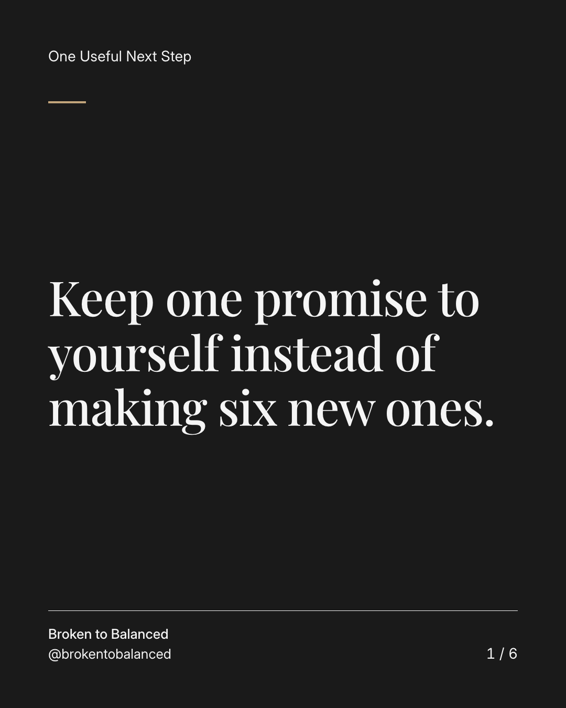
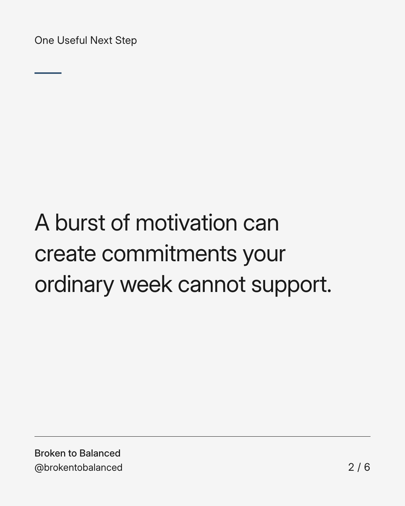
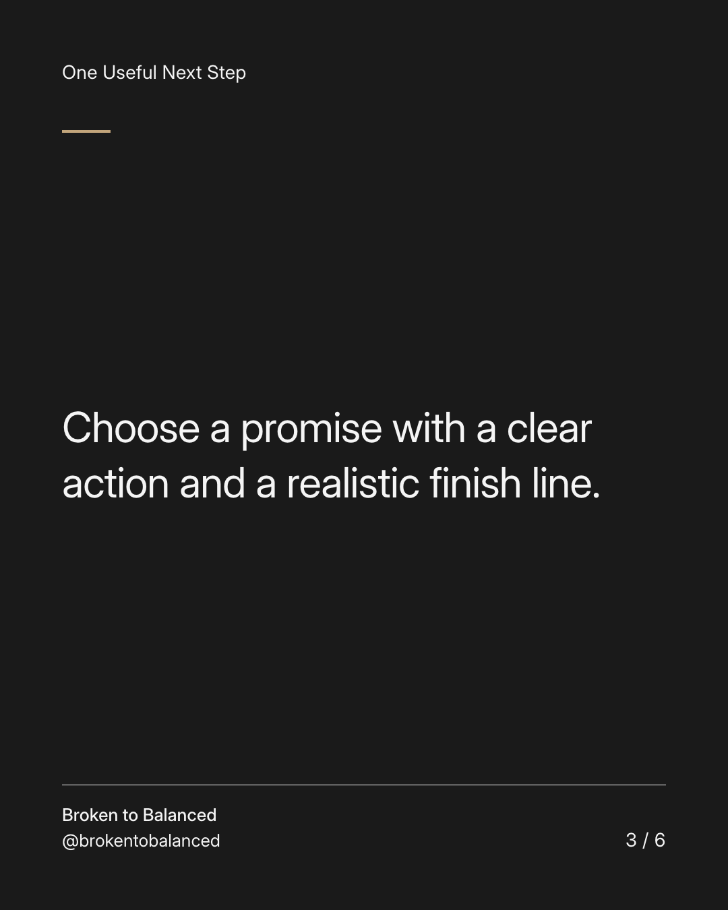
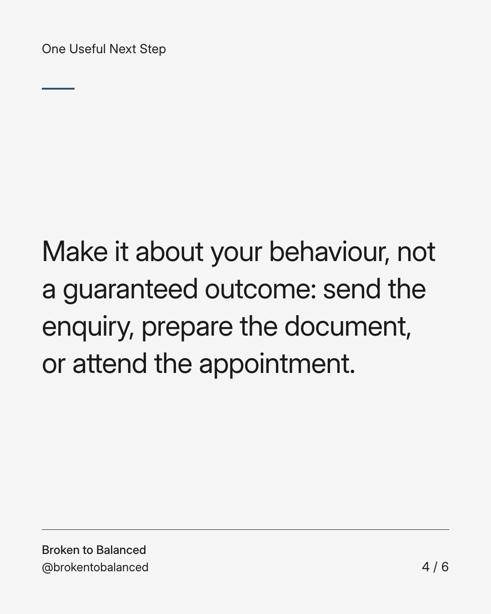
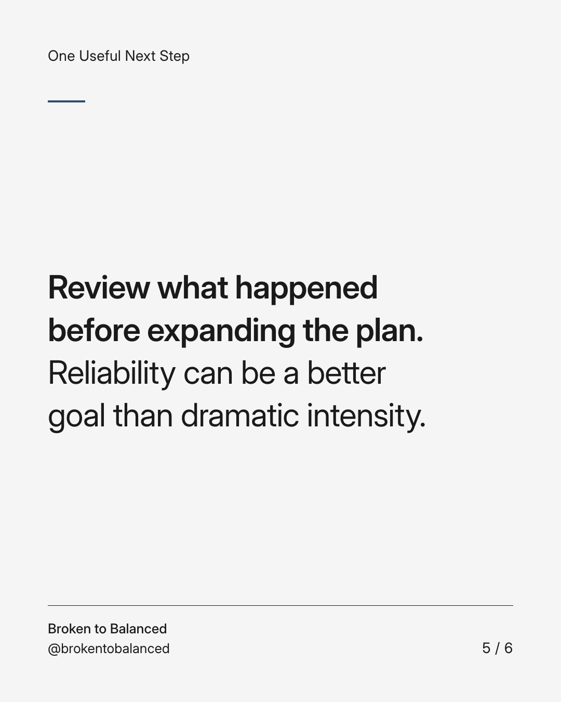
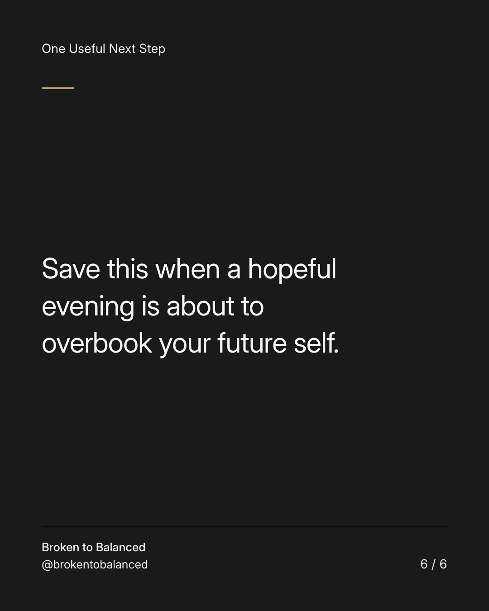

Exact text and accessibility text
Keep one promise to yourself instead of making six new ones.
Slide 1 of 6. Keep one promise to yourself instead of making six new ones.


Exact text and accessibility text
A burst of motivation can create commitments your ordinary week cannot support.
Slide 2 of 6. A burst of motivation can create commitments your ordinary week cannot support.


Exact text and accessibility text
Choose a promise with a clear action and a realistic finish line.
Slide 3 of 6. Choose a promise with a clear action and a realistic finish line.


Exact text and accessibility text
Make it about your behaviour, not a guaranteed outcome: send the enquiry, prepare the document, or attend the appointment.
Slide 4 of 6. Make it about your behaviour, not a guaranteed outcome: send the enquiry, prepare the document, or attend the appointment.


Exact text and accessibility text
Review what happened before expanding the plan. Reliability can be a better goal than dramatic intensity.
Slide 5 of 6. Review what happened before expanding the plan. Reliability can be a better goal than dramatic intensity.


Exact text and accessibility text
Save this when a hopeful evening is about to overbook your future self.
Slide 6 of 6. Save this when a hopeful evening is about to overbook your future self.
Exact caption
Plain-text fallback: select and copy the caption.